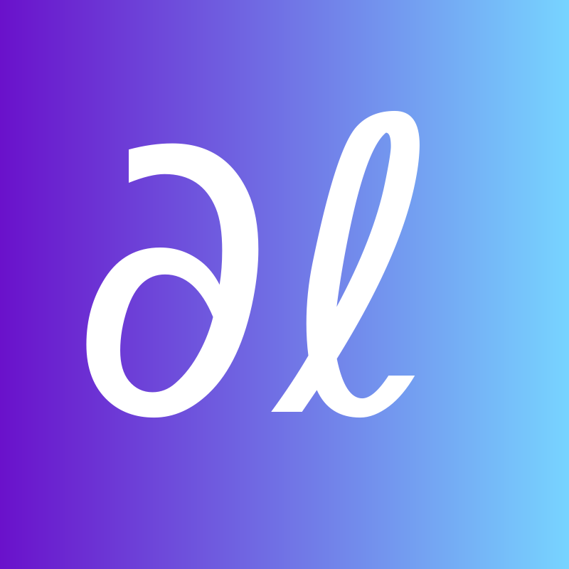
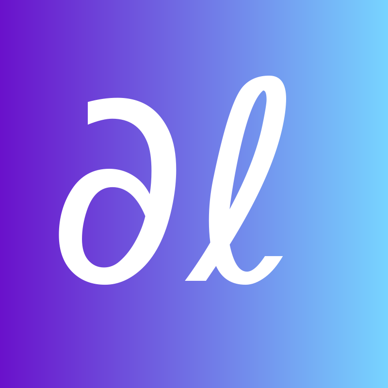

The ever-changing landscape of programming languages poses a significant challenge in the
development and training of models designed for code generation. Code, being a dynamic
and constantly evolving environment, necessitates a continuous process of adaptation to
stay in sync with the rapidly shifting paradigms, frameworks, and methodologies within
the software development domain. The inherent variability in coding styles, the emergence
of new programming languages, and the continuous evolution of libraries and packages
underscore the imperative for an active approach in updating code generation models. In
response to this challenge, we introduce
BibTex Code Here
 
